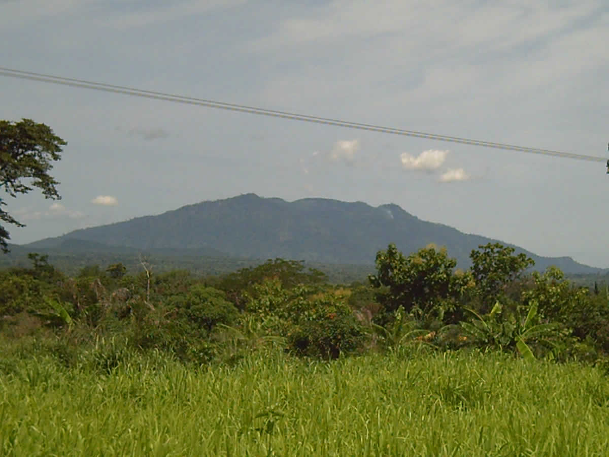
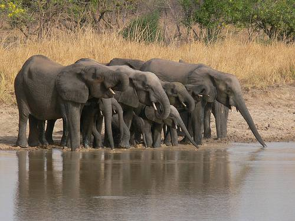
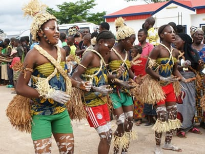
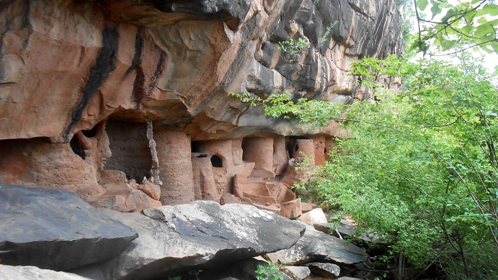

Le togo est plein de sites touristiques.
il a même eu en l'an 2004 le pris mondial d'un patrimoine mondial
Au Togo, le soleil est toujours au rendez-vous !
La meilleure période pour visiter le Togo va d'octobre en avril, pendant la saison sèche. Toutefois, la saison des pluies ne constitue pas un handicap pour le tourisme, car le soleil est toujours au rendez-vous.
Le Togo jouissant d'un été " permanent ", offre le bain de soleil, le bain de mer, la cure de montagne à une température toujours comprise entre 24° et 30° C.
LA RÉGION MARITIME
Lomé est renommée sur toute la côte du golfe du Bénin pour ses plages de sable fin, ses promenades ombragées le long du littoral.
A 30 km de Lomé, vous découvrirez la petite ville d'Agbodrafo dénommée par les navigateurs portugais Porto Seguro ;
là sur le lac Togo, magnifique plan d'eau bordé d'une forêt sacrée, vous pratiquerez la voile, le ski nautique, avant de vous reposer à l'hôtel " LE LAC ".
Encore 15 km de route et vous arrivez à Aného, ville historique et deuxième capitale du Togo pendant la période coloniale.
Les rives du Mono: Le Mono, l'un des grands fleuves du Togo, offre d'innombrables curiosités: lavandières du Mono, crocodiles au soleil, sieste d'hippopotames. De Tokpli, village situé sur le Mono, vous accédez à la forêt classée de Togodo, où abondent biches, phacochères et singes.
A une demi-heure en voiture de Lomé, se trouve Agbodrafo, une ancienne cité portugaise (auparavant Porto Seguro) qui est à présent une tranquille petite ville au bord du lac Togo;
La ville d'Agbodrafo a été reconnue comme faisant partie de la "Côte des esclaves". On peut y découvrir quelques vestiges de ce passé tels que la "maison des esclaves" (Woold Home) ou le puit des enchaînés.
Située à 15 kilomètres à l'est d'Agbodrafo, Aného est le centre spirituel du peuple Guin-Mina.
La ville est bâtie près d'une lagune sinueuse et est entourée de villages de pêcheurs et de plantations de cocotiers.
Jadis centre de la traite des Noirs, Aného fut le premier centre de l'administration allemande. Plus tard, elle devint la première capitale du territoire.
De nos jours, Aného conserve l'âme d'une petite ville coloniale du 19ème Siècle. C'est une cité paisible de pêcheurs et d'agriculteurs, un centre agricole réputé pour sa production de manioc, une culture vivrière importante.
A Aného, on peut observer le fonctionnement des coopératives de pêche, ces grands groupes de familles de pêcheurs qui se partagent les prises.
LA RÉGION DES PLATEAUX
Caractérisée par son climat doux, frais et sa végétation luxuriante.
Kpalimé et ses environs :
Le pic d'Agou: Altitude 986 mètres, point culminant du Togo, peut faire l'objet d'une ascension par temps clair. Dans la vallée se développent l'élevage industriel d'Avétonou et la station agro-industrielle de Tové.
A voir également
Les forêts classées de Missahoe, d'Atilakoutsé et de Kpimé
Le Château présidentiel et des grottes aux chauves-souris de Kevuvu
Le plateau de Danyi et ses forêts de wawas et d'irokos
Les chutes de Kpimé
Le monastère de Dzogbegan

L'Akposso
Région de plateaux boisés où s'alternent ça et là les plantations industrielles des café et de cacao, l'Akposso est un véritable " grenier " à fruits: avocats, ananas, banane, etc.
La cascade d'Akrowa: A 11 km de Badou, cette magnifique cascade, haute de 35 m, descend à la verticale d'une source au cheminement souterrain. Son accès pour l'instant est réservé aux plus sportifs car il faut presque quarante minutes d'escalade pour se tremper dans ses eaux douées, paraît-il, de précieuses vertus thérapeutiques.
Atakpamé
Ville refuge dans l'antiquité. Atakpamé, bâtie à 500 m d'altitude offre de vastes horizons verdoyants. C'est une ville carrefour dont le marché, qui se tient tous les samedis, rassemble une foule accourue de tous les coins de l'Akposso et de la plaine.
A quelques kilomètres de la ville, on peut voir les ruines de la base allemande de Kamina qui était reliée directement à Berlin par radio. C'est à Kamina que les Allemands firent leur reddition aux alliés en août 1917.
A 45 km d'Atakpamé se trouve le barrage hydroélectrique de Nangbeto situé sur un plan d'eau d'une superficie de 180 km2.

LA RÉGION CENTRALE
La réserve de Fazao-Malfacassa:
Berceau d'espèces animales de tous genres (éléphants, buffles, antilopes, primates et oiseaux), lieu d'association végétale naturelle, de détente, d'observation, de safari-photo et de chasse touristique.
Un hôtel magnifique de 25 chambres doté d'une piscine y accueille les touristes dans un cadre enchanteur.
Bassar
Le camp Massu : vestige d'époque coloniale.
Nagbani et Bandjéli avec leurs hauts fourneaux d'argile restent les témoins de l'exploitation traditionnelle du fer.
La rivière de Bapuré: (64 km de Bassar) avec son crocodile sacré.
De Sokodé à Bafilo:
Le barrage d'Aléhéridè: il alimente la ville de Sokodé en eau potable.
Le lac aux Aigrettes.
La faille d'Alédjo: véritable coup de sabre dans la montagne.
Alédjo Kadara: station climatique située à 850 mètres d'altitude offre une vue panoramique sur les monts Alédjo et sur la plaine du Mono

LA REGION DE KARA
Le pays Kabyè : venant de Bafilo, le touriste découvre le paysage pittoresque de massifs volcaniques du pays Kabyè. Les Kabyè " paysans de pierre " excellent dans l'art de la culture en terrasse.
Les monts Défalé : formés de longues chaînes parallèles couvertes de nérés, de baobabs et de palmiers, les monts Défalé touchent le pays Tamberma vers l'Est.
Le pays Tamberma : avec ses " châteaux forts " construits en terre glaise, sa plaine luxuriante et ses montagnes verdoyantes, le pays Tamberma émerveille tout visiteur.
Le parc national et réserve de chasse de la Kéran : tous ces merveilleux sites que vous venez de traverser vous conduisent à Kanté à la découverte du Parc national de la Kéran qui se prolonge jusqu'à la préfecture de l'Oti. Situé à 92 km de Kara, ce site d'une superficie de 163 240 ha aménagé en Parc national (109 240 ha) et en réserve de chasse (54 000 ha) recèle une potentialité faunique riche et variée: troupeaux d'éléphants, buffles, antilopes, avifaune bien représentée (pintades, francolins, poules de rochers, oiseaux de tous genres), primates, sans oublier les rivières Kéran et Koumongou avec leurs bancs de poissons.
A voir également le barrage de la Kozah qui alimente en eau potable toute la région.

LA RÉGION DES SAVANES
Comme son nom l'indique, elle est formée de savanes d'une platitude exceptionnelle, curieusement entrecoupées de monts verdoyants riches en damans de rochers.
C'est le domaine par excellence du rônier.
Avant Mango, l'immense plaine alluviale de l'Oti avec ses eaux poissonneuses vous présente, en saison sèche, d'importants troupeaux de bœufs qui se bousculent à la recherche d'une herbe fraîche. Mais en saison de pluie, cette plaine est transformée en rizière.
Forêts de " la Fosse aux lions "
La Fosse aux Lions " avec son important troupeau d'éléphants, ses mares naturelles et ses fourrés verdoyants, constitue l'un des premiers points touristiques de Dapaong.
A l'ouest de Dapaong
La Fosse sacrée de Doung : au fond de cette dépression profonde coule une rivière poissonneuse abritant des crocodiles, le tout entouré d'une galerie forestière au micro-climat favorable au pique-nique et à la détente.
Vous pouvez visiter aussi " la fosse sacrée de Tanlona " sur la rivière Karyata à la frontière Ghana-Togo et les magnifiques grottes à greniers et à pigeons des monts de Nano.
A l'Est de Dapaong
Réserve de chasse de Mandouri. Dans cette vaste plaine arborée, parsemée d'étangs naturels, la très riche réserve de Mandouri, avec ses troupeaux d'antilopes, de buffles, de phacochères, ses pintades et ses canards, est une zone d'attrait touristique remarquable. L'Oti qui la traverse fait l'objet d'une pêche intensive.
